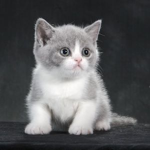

Hi! My name is Cyprianne Jean A. Murillo, and I am a 2nd year college student currently taking up Bachelor of Science in Computer Science.
I have various hobbies and interests; I like art, technology, animals and I enjoy playing the bass as well as listening to music.
I am at a point in my life where I am still quite confused as to what I truly want to do, self-discovery is such a wide spectrum.
Cats are my favorite animal, and I have one of my own too! His name is Abbu like the monkey Abu from Aladdin. He is a grey-tuxedo British shorthair and Persian mix.
This picture is not my cat, but it looks somehow similar to Abbu
I really really really really really realluyjsrg love food. When I am happy I eat food, when I am sad I eat food, when I am angry I eat food jgshgshgjs I love food.
| Number in Decimal | Number in Binary |
|---|---|
| 0 | 0000 |
| 1 | 0001 |
| 2 | 0010 |
| 3 | 0011 |
| 4 | 0100 |
| 5 | 0101 |